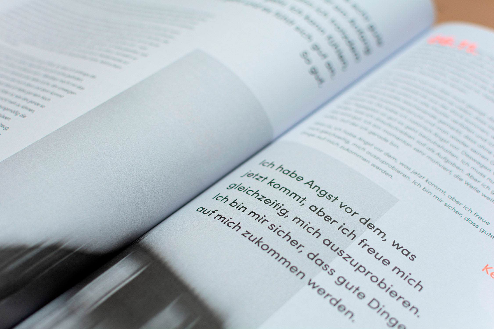
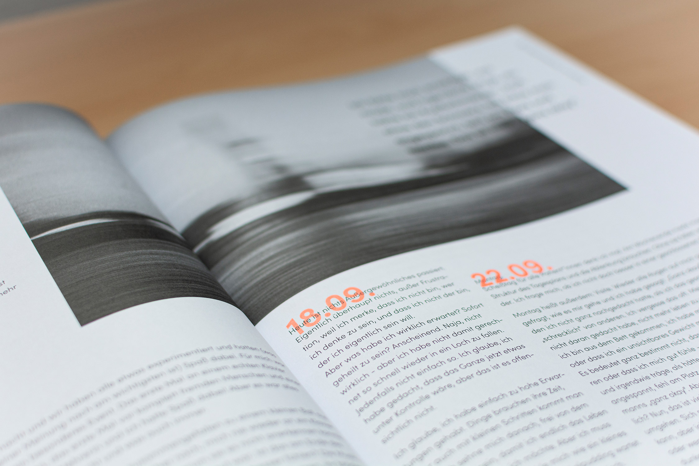

Über den Zeitraum von zwei Semestern ist das Studiengangsmagazin "anners" entstanden. In 18 Artikeln auf insgesamt 82 Seiten schreiben wir offen über kontroverse Themen und brechen mit Taboos.
Jede/jeder Studierende war selbst für den Inhalt und das Layout des eigenen Artikels verantwortlich gewesen. In meinem Artikel schreibe ich über den Aufenhalt eines Freundes in einer psychatrischen Klinik.
Neben meinen Artikel habe ich außerdem das Logo des Magazins erstellt und das Gestaltungsraster entwickelt. Desweiteren habe ich das Team der Webausgabe geleitet.
 "anners" wurde in einer Auflage von 1.500 Stück gedruckt und kostenlos an öffentlichen Orten in Bremerhaven und Bremen ausgelegt.